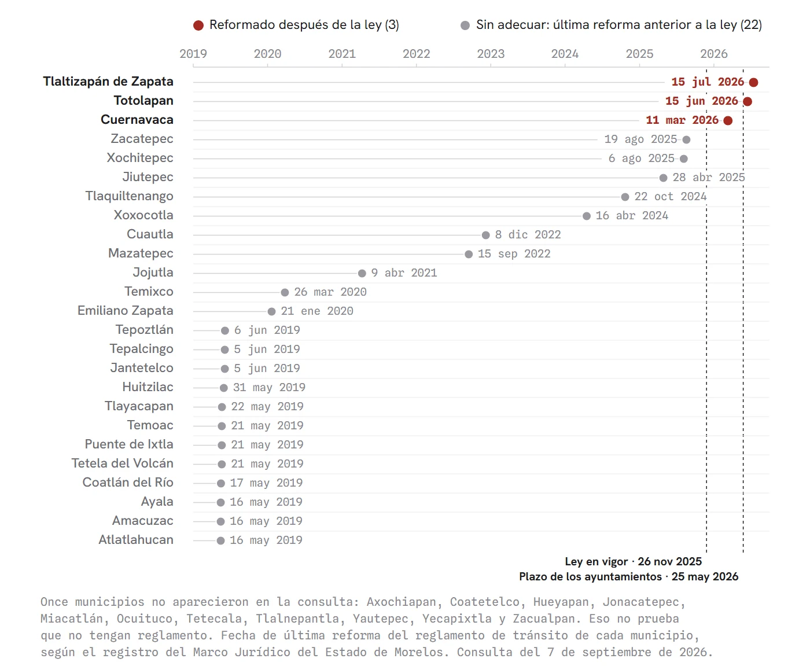

Los perros tienen la correa suelta (El reglamento que nadie escribió)
La Ley de Movilidad, Transporte y Seguridad Vial de Morelos rige desde el 26 de noviembre de 2025 y manda al Reglamento el procedimiento para liberar un vehículo del corralón. Ese Reglamento venció el 25 de mayo de 2026 y no aparece publicado: 114 días de retraso al 16 de septiembre. La ley lo menciona 105 veces. Son cinco plazos vencidos, incluido el Observatorio Ciudadano que vigilaría esto. Antes de la ley nueva las grúas sí estaban reguladas como transporte público, con tarifas fijadas por el Ejecutivo; ese reglamento de 2008 cuelga hoy de una ley abrogada. Mientras tanto, la misma ley sí se reformó el 23 de abril para que los concesionarios 'que así lo deseen' se ajusten a las obligaciones nuevas, un mes antes de que venciera el plazo del reglamento, y en junio se publicó la tarifa del pasaje. Con la tolerancia deliberada de Alisha Holland (2017), la tarifa escrita de Cuautla (1,642 pesos) contra las liberaciones denunciadas de 20 a 80 mil, y el hilo en contra: dos poderes distintos, una negociación pública y un abandono municipal más viejo que este gobierno.
El gancho de una grúa no necesita reglamento para cerrarse sobre un coche. Para soltarlo sí. En Morelos rige desde el 26 de noviembre de 2025 la Ley de Movilidad, Transporte y Seguridad Vial, y su artículo 192 dice que el procedimiento para liberar un vehículo del corralón "se establecerá en el Reglamento". Ese Reglamento tenía fecha: 25 de mayo de 2026. Hoy, 16 de septiembre, no aparece en el Periódico Oficial ni en el Marco Jurídico del estado. Son 114 días de retraso.
La ley tiene 102 páginas y 215 artículos. En ese cuerpo, la palabra "Reglamento" aparece 105 veces referida al reglamento de la propia ley. Lo cita 105 veces y nadie lo ha visto. Una ley que remite 105 veces a un documento de cero páginas. Lo que sí existe es el gancho.
No es el único plazo vencido. La misma ley traía cinco, y los cinco se pasaron. Los 36 ayuntamientos tenían 180 días para adecuar sus reglamentos, y de los 25 municipios con reglamento de tránsito localizado en el Marco Jurídico solo Cuernavaca, Totolapan y Tlaltizapán lo tocaron después de la ley; Cuautla sigue con el suyo de diciembre de 2022. En su descargo hay que decir que se les pidió adecuarse a una ley cuyo propio reglamento no existe: llenar el anexo de un contrato que el estado todavía no escribe. Los lineamientos para certificar escuelas de manejo vencieron el 24 de febrero, hace 204 días. El Observatorio Ciudadano, el órgano con participación de la sociedad que podría preguntar por todo esto, debía quedar instalado el 26 de marzo y no hay constancia pública de que exista; lleva 174 días. El único que podría preguntar por el reglamento es justo el que no se instaló.

Lo que está en juego se mide en dinero del lector. En Cuautla, donde el corralón es municipal, la tarifa está publicada en la Ley de Ingresos: 9 UMA por el traslado, 3 por el inventario y 2 por cada día de estancia, es decir 1,642 pesos por sacar un coche al día siguiente. Ese número existe porque está escrito. Los transportistas de la CATEM que bloquearon el Congreso el 1 de febrero hablaron de otro mundo: liberaciones "desde los 20 mil hasta los 80 mil pesos" en grúas y corralones particulares, y la razón: "no existe un padrón oficial sobre el número de corralones y grúas" que operan en el estado. Entre 1,642 pesos y 80,000 no hay, a mi juicio, una diferencia de criterio. Hay una página en blanco, y la página en blanco es la tarifa.
Lo que hace distinto este vacío es que antes no existía. Morelos sí tiene un reglamento de grúas: el de una ley que ya no existe. El Reglamento de Transporte de 2008 clasifica el "servicio de grúas" como transporte público de carga, describe el equipo mínimo de cada grúa, del malacate a las banderolas, y ordena que las tarifas las fije el titular del Ejecutivo y se publiquen en el Periódico Oficial y en dos diarios de mayor circulación. Cuelga de la Ley de Transporte de 2014, que la ley nueva abrogó en su tercera transitoria. Sigue publicado, sin marca de abrogación, sostenido por una ley muerta. La ley nueva, por su parte, no nombra a las grúas ni una vez en 102 páginas; su artículo 78 clasifica la carga en general y especializada, y ahí se acaba. Se tumbó la regla vieja, la regla nueva se mandó a un reglamento, y el reglamento no se escribió. Visto con las fechas encima, cuesta trabajo leerlo como descuido.
Una ley que remite 105 veces a un documento de cero páginas. Lo que sí existe es el gancho.
Es como firmar un contrato de renta que dice que el monto, la forma de pago y el procedimiento para recuperar el depósito están en un anexo, y el anexo no se ha redactado. Conveniente, y la pregunta es para quién. El inquilino no queda sin obligaciones: queda sin saber cuáles son. Mientras tanto, el casero cobra lo que le parece.
El aparato no estuvo parado. El 7 de enero el gobierno estatal anunció un acuerdo con los transportistas para que el paso del modelo hombre-camión al de empresa fuera "voluntaria y gradual, no obligatoria". El 1 de febrero, con los camioneros bloqueando el Congreso, la gobernadora dijo que desde el inicio de su administración existía un diagnóstico de "cuotas excesivas", que habría una mesa de trabajo para garantizar "tarifas justas y procedimientos transparentes", que la iniciativa estaba "en desarrollo" y que se analizaban corralones públicos "sin fines de lucro". El 22 de abril el Congreso aprobó y el 23 se publicó el Decreto 1170: donde la transitoria octava decía que los concesionarios "deberán ajustarse" a las obligaciones nuevas de operación, seguridad y equipamiento, ahora dice que los "que así lo deseen, podrán ajustarse", con "mecanismos de adhesión voluntaria". Del anuncio a la publicación pasaron 106 días. El 28 de abril las organizaciones civiles se levantaron de la mesa: siete reuniones, ningún tabulador, y una propuesta que "se limita a beneficiar a los concesionarios de grúas y corralones". El 25 de mayo venció el plazo del Reglamento. El 18 de junio el Ejecutivo publicó una tarifa: la del pasaje de camión, que subió 3 pesos y quedó en 13. Son 15 páginas y la palabra grúa no aparece ni una vez. Hubo diagnóstico, mesa, iniciativa, dictamen, votación, publicación y tarifa. Lo que no hubo fue la página que dice cómo recuperar un coche. El aparato escribe rápido cuando quiere.
La politóloga Alisha Holland llamó forbearance, tolerancia deliberada, a los casos en que un gobierno decide no aplicar una norma que sí podría aplicar. Su prueba para distinguirla del simple retraso es mirar si el mismo aparato funciona para otras cosas. Cuando funciona, la omisión deja de ser incapacidad y se vuelve elección. No estoy diciendo que alguien lo diseñó. Estoy contando los días, y los días están en el Periódico Oficial.
En contra de esta lectura pesan cuatro cosas. El Decreto 1170 lo aprobó el Congreso y el Reglamento le toca al Ejecutivo: son dos poderes distintos, y esta columna no los confunde. La reforma de abril salió de una negociación pública, anunciada desde enero y justificada por escrito para que los concesionarios no "pudieran sentirse perjudicados"; no fue un movimiento a escondidas. La transitoria octava habla de concesiones en general y, como las grúas ni aparecen en la ley nueva, es posible que ni las alcance. El reglamento tardío, además, es la regla en México y no la excepción: la mayoría de los municipios de Morelos opera con reglamentos de tránsito de 2019 o anteriores, un abandono más viejo que este gobierno. El propio Congreso lo dejó escrito en febrero, al aprobar la exención de grúa y corralón para víctimas de robo: "la sociedad ha demandado se regule el servicio de grúas y corralones". Esa exención entra en vigor el 1 de enero de 2027. Hasta la piedad trae transitoria.
Si en abril hubo tiempo, votos y publicación para volver voluntaria una obligación, y en junio hubo tiempo para subir el pasaje, ¿por qué no lo ha habido, en 294 días de ley, para escribir la página que dice cuánto cuesta y cómo se recupera un coche del corralón?
Cerrar el gancho ya está escrito; soltarlo no. Un vacío tan conveniente no necesita que alguien lo haya diseñado: le basta con que nadie tenga prisa por llenarlo, y mientras tanto alguien cobra.
La pieza anterior: Los perros tienen hambre Ver el expediente →
- Todos los ordenamientos citados se leyeron en su texto oficial, incorporado al acervo normativo LEYES/ de 45 Digital Noticias, con vigencia cotejada el 7 de septiembre de 2026 contra el Periódico Oficial "Tierra y Libertad" y el Marco Jurídico del Estado de Morelos.
- Ley de Movilidad, Transporte y Seguridad Vial del Estado de Morelos, Periódico Oficial "Tierra y Libertad" 6493 Extraordinaria, 25 de noviembre de 2025 (vigencia 26 de noviembre de 2025), arts. 5 fr. X, 78, 97, 189 y 192 y disposiciones transitorias tercera a octava y décima quinta. PDF oficial: periodico.morelos.gob.mx/obtenerPDF/2025/6493.pdf · Texto consolidado en Marco Jurídico: marcojuridico.morelos.gob.mx/documentos/2864/download
- Decreto 1170 por el que se reforma la disposición transitoria octava de la Ley de Movilidad, Periódico Oficial 6553 Extraordinaria, 23 de abril de 2026 (vigencia 24 de abril de 2026): periodico.morelos.gob.mx/obtenerPDF/2026/6553.pdf
- Reglamento de Transporte para el Estado de Morelos, Periódico Oficial 4635, 13 de agosto de 2008, arts. 3 fr. XVII, 59, 68, 145, 146 y 147: periodico.morelos.gob.mx/obtenerPDF/2008/4635.pdf
- Decreto 1004 (exención de arrastre y resguardo a víctimas de robo de vehículo), Periódico Oficial 6520 Extraordinaria, 3 de febrero de 2026, disposición transitoria segunda: periodico.morelos.gob.mx/obtenerPDF/2026/6520.pdf
- Acuerdo por el que se autoriza la tarifa general para el servicio de transporte público de pasajeros con itinerario fijo en el estado de Morelos, Periódico Oficial 6569 Extraordinaria, 18 de junio de 2026 (vigencia 1 de julio de 2026): marcojuridico.morelos.gob.mx/documentos/1320/download
- Ley de Ingresos del Municipio de Cuautla, Morelos, para el ejercicio fiscal 2026, Periódico Oficial 6509 Extraordinaria, 30 de diciembre de 2025, art. 47, Sección XV: marcojuridico.morelos.gob.mx/archivos/leyes_ingreso/pdf/LINGRESOSCUAUTLA26.pdf
- INEGI, valor de la Unidad de Medida y Actualización 2026 (117.31 pesos diarios): inegi.org.mx/temas/uma
- Marco Jurídico del Estado de Morelos, buscador de ordenamientos municipales (consulta del 7 de septiembre de 2026, término "Reglamento de Tránsito"): marcojuridico.morelos.gob.mx
- Gobierno del Estado de Morelos, boletín "Reafirma Margarita González Saravia compromiso con la regulación de grúas y corralones para proteger a la ciudadanía", 1 de febrero de 2026: morelos.gob.mx/ultimas-noticias/reafirma-margarita-gonzalez-saravia-compromiso-con-la-regulacion-de-gruas-y-corralones-para-proteger-a-la-ciudadania
- El Universal, "Camioneros protestan contra abusos de corralones y grúas en Morelos; denuncian cobros excesivos", 1 de febrero de 2026: eluniversal.com.mx/estados/camioneros-protestan-contra-abusos-de-corralones-y-gruas-en-morelos-denuncian-cobros-excesivos
- El Universal, "Gobierno de Morelos y transportistas acuerdan modificar Ley de Movilidad; se mantiene proyecto de modernización", 7 de enero de 2026: eluniversal.com.mx/estados/gobierno-de-morelos-y-transportistas-acuerdan-modificar-ley-de-movilidad-se-mantiene-proyecto-de-modernizacion
- Diario de Morelos, "Avalan cambios que eliminan obligación de modernizar transporte público", 22 de abril de 2026: diariodemorelos.com/noticias/avalan-cambios-eliminan-obligacion-modernizar-transporte-publico
- La Unión de Morelos, "En vigor, cambio en ley de transporte", 26 de abril de 2026: launion.com.mx/morelos/politica/noticias/292715-en-vigor-cambio-en-ley-de-transporte.html
- El Regional del Sur, "Chocan organizaciones civiles y gobierno por abusos en corralón", 28 de abril de 2026: elregional.com.mx/chocan-organizaciones-civiles-y-gobierno-por-abusos-en-corralon
- Alisha C. Holland, Forbearance as Redistribution: The Politics of Informal Welfare in Latin America, Cambridge University Press, 2017. DOI: doi.org/10.1017/9781316795613
- 45 Digital Noticias, "Los perros tienen hambre", columna del 14 de septiembre de 2026: 45digitalnoticias.github.io/columnas/los-perros-tienen-hambre.html
Las ligas van a la vista para que cualquiera compruebe por su cuenta. Si alguna dejó de resolver, escríbenos y la reponemos.
SRVO